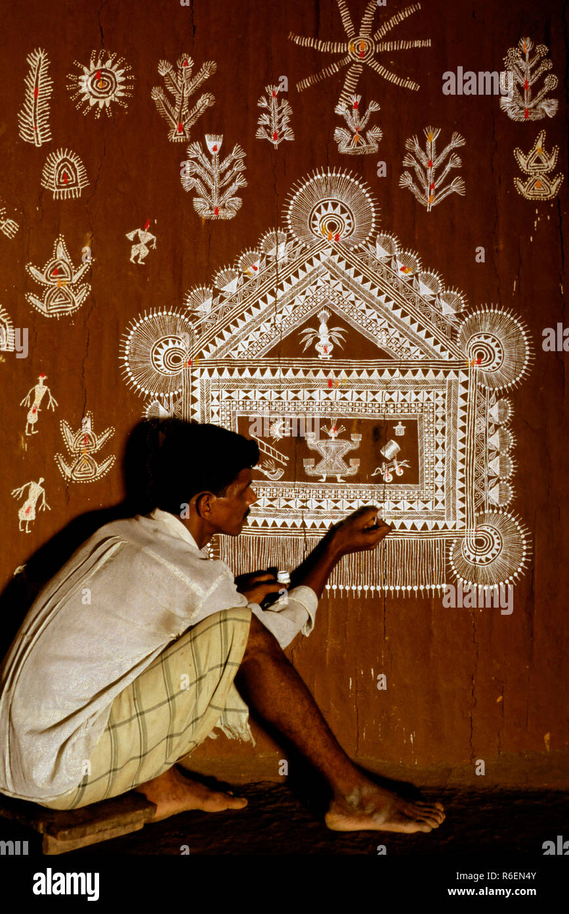

Warli Community
About the Warli Tribe
The Warli are an indigenous tribe living in the mountainous and coastal areas of Maharashtra and Gujarat, India. They have a rich cultural heritage that revolves around their close connection with nature and community living.
Traditionally, the Warli people are known for their unique art, which depicts scenes from daily life, nature, and rituals. This art form, characterized by simple geometric shapes and motifs, has gained recognition worldwide for its beauty and cultural significance.
The Warli community follows a simple lifestyle, relying on agriculture and handicrafts for sustenance. They have their own dialect, music, and dance forms, which are integral parts of their cultural identity.
Warli Culture and Traditions
The Warli people have a rich oral tradition, with stories and legends passed down through generations. Their culture is deeply rooted in nature worship, and they believe in the presence of spirits in all natural elements, such as trees, rivers, and animals.
Warli art plays a significant role in their cultural practices, with paintings often depicting scenes from daily life, festivals, and rituals. These paintings are created using natural materials like rice paste and earth pigments and are an essential part of religious ceremonies and celebrations.
Warli Art and Paintings
Warli Art and Paintings
The Warli people are renowned for their unique art form, which dates back to thousands of years. Warli paintings are characterized by their simple yet striking geometric designs depicting scenes from daily life, nature, and rituals.
Traditionally created by the women of the community, Warli paintings are made using natural materials such as rice paste and earth pigments. The paintings often feature human figures, animals, trees, and ritualistic motifs, symbolizing the close relationship between the Warli people and their environment.
Warli art is not just a form of expression but also a means of communication and storytelling. Each painting tells a story, conveying the community's customs, traditions, and spiritual beliefs. These paintings adorn the walls of Warli households and are integral to religious ceremonies and celebrations.
Preservation of Warli Heritage
Despite facing modern challenges and societal changes, efforts are being made to preserve and promote Warli culture and traditions. Various organizations and individuals are working to document Warli art, language, and customs, ensuring that this unique heritage continues to thrive for future generations.
Join the Warli Community
Immerse yourself in the rich cultural heritage of the Warli tribe by learning more about their art, customs, and way of life. Discover the beauty of Warli culture and contribute to its preservation and promotion. This game intends to spread awareness about the importance of being connected with nature and how we can learn that from the Warli Community.